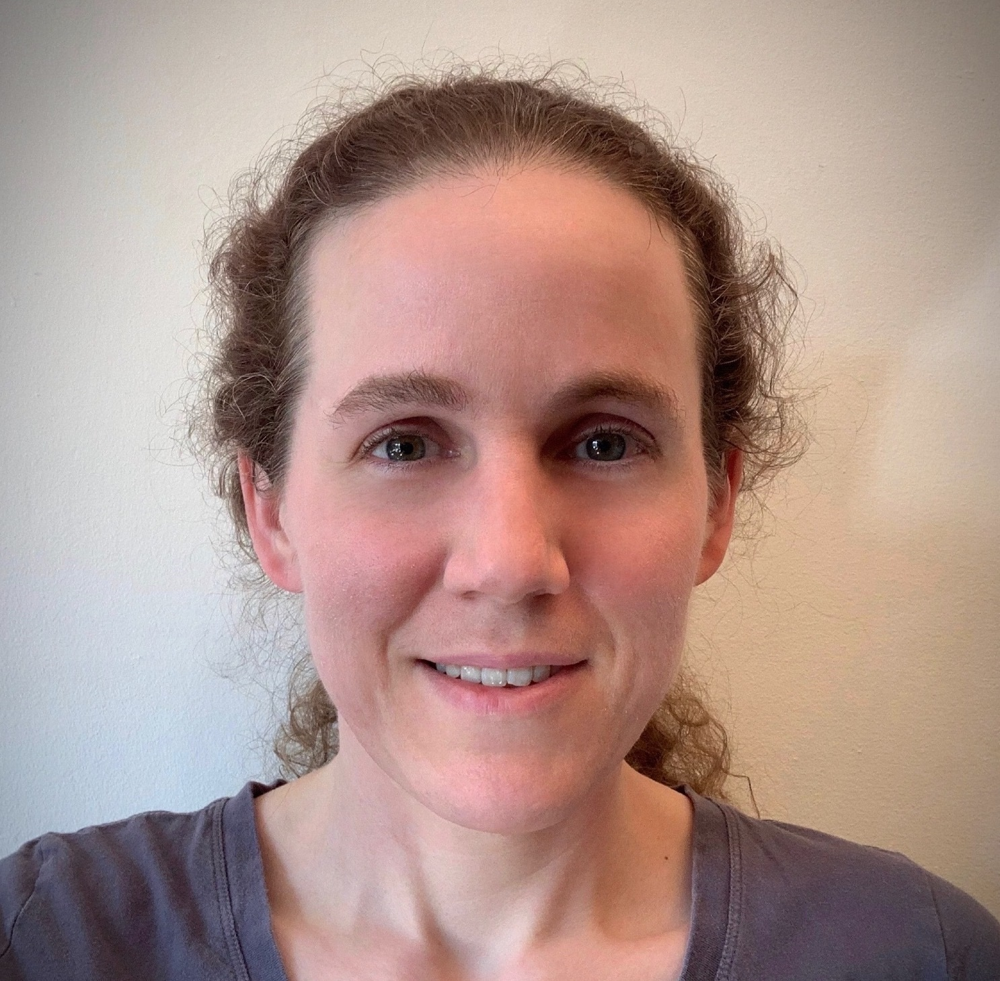
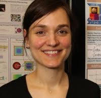
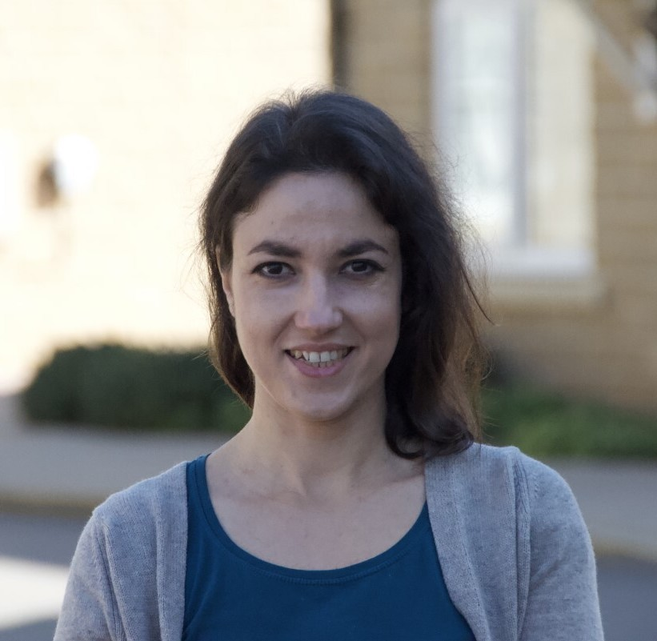
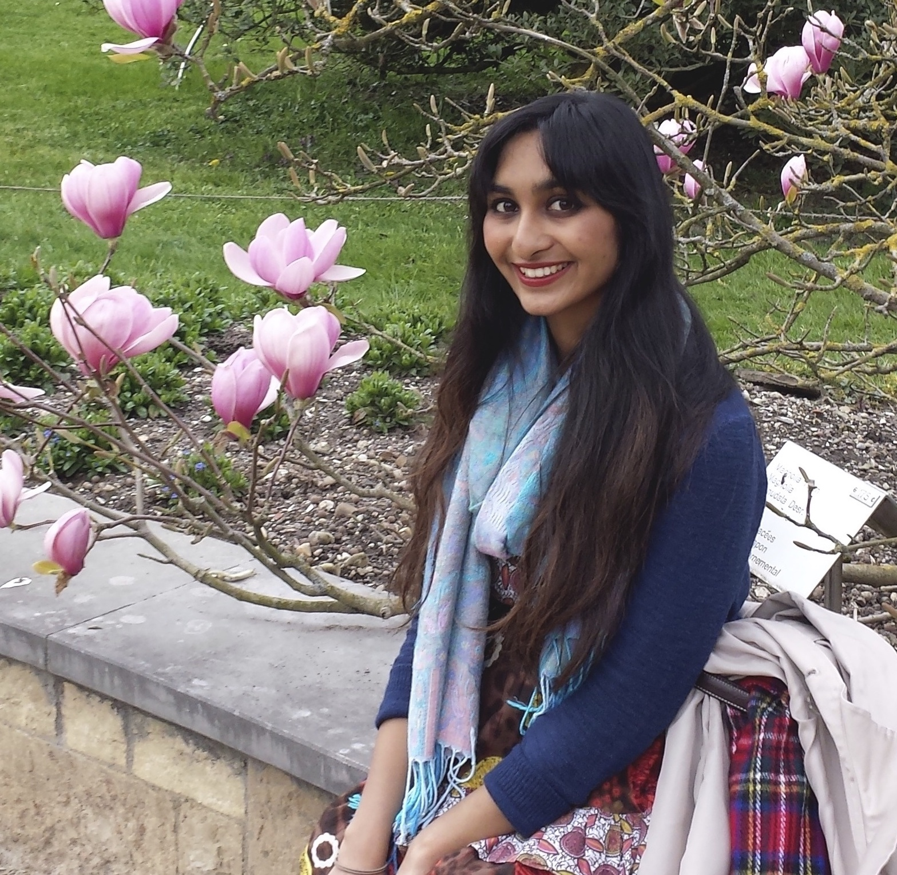
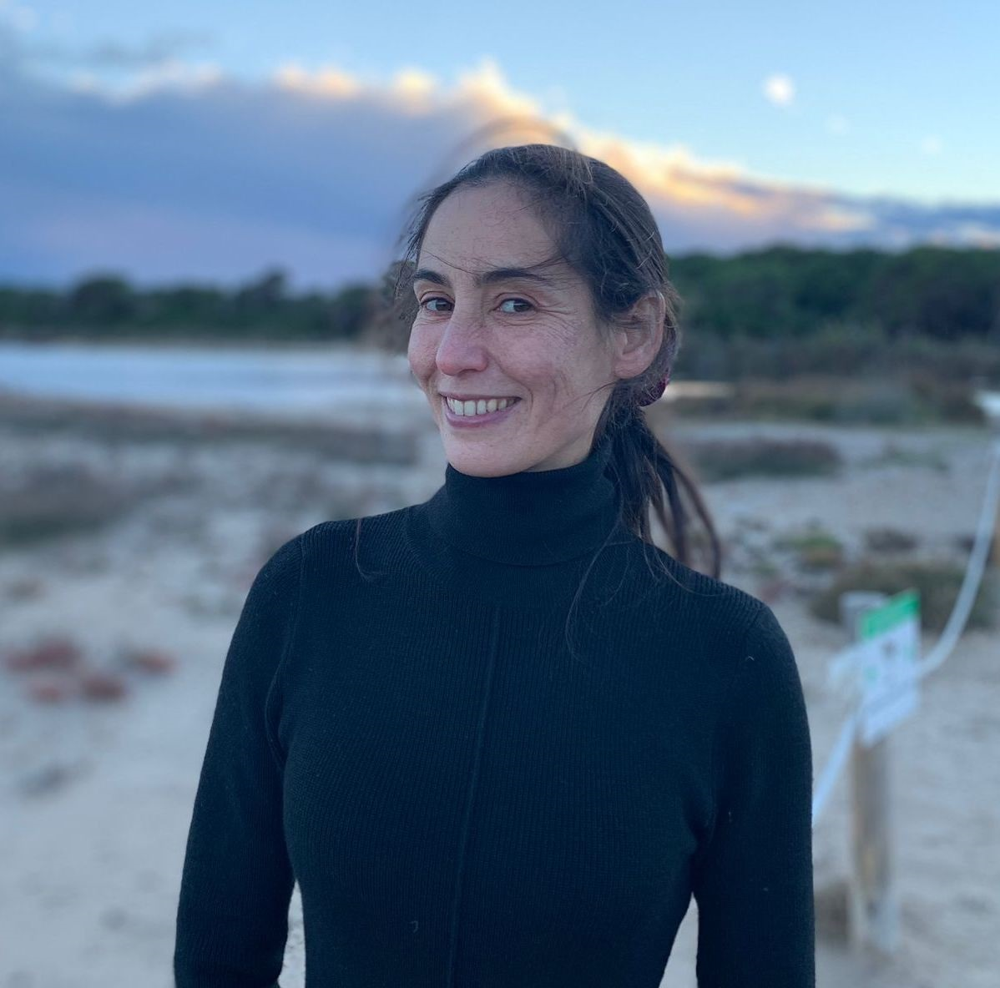
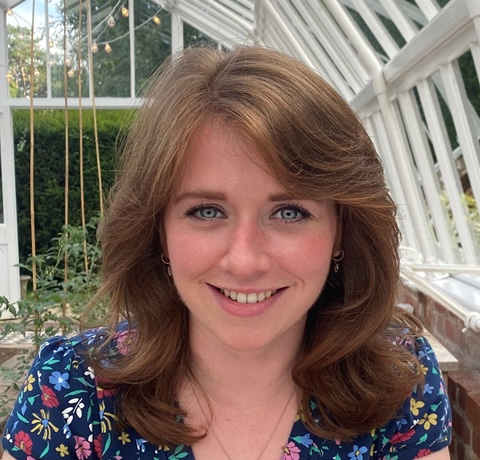

Invited speakers
Sarah Dean Rasmussen, University of Cambridge
- 
Sarah is an EPSRC Fellow in mathematics at the University of Cambridge, recently returned from a one-year fellowship at the School of Mathematics at the Institute for Advanced Study in Princeton. She received her PhD from Harvard University in 2009, followed by an extended interlude as a full time parent. Most of her research has been in low dimensional topology and related subjects, but she has spent much of the past two years working in mathematical epidemiology and science communication.
Céline Maistret, University of Bristol
- 
Céline works in Number Theory, mainly studying the arithmetic of abelian varieties, with an interest towards computations related to the parity conjecture and the Birch and Swinnerton-Dyer conjecture.
She received her PhD from the University of Warwick in 2017 and was a research associate at the University of Bristol before joining Boston University as a postdoctoral faculty fellow. Since January 2021, she is a Royal Society Dorothy Hodgkin Fellow at the University of Bristol.
Cristina Manolache, University of Sheffield
- 
Cristina is an Algebraic Geometer working on problems in Enumerative Geometry. She got her PhD at SISSA, Trieste. Following this, she held postdoctoral positions at Humboldt Berlin and at Imperial College London. Since 2019, Cristina has been a senior lecturer at the University of Sheffield.
Vandita Patel, University of Manchester
- 
Vandita is a Lecturer in Pure Mathematics at the University of Manchester. Prior to this, she was a Neumann Research Fellow at the University of Manchester and a postdoctoral researcher at the University of Toronto. She obtained her PhD in 2017 from the University of Warwick.
Her research is in Number Theory, where she uses a mixture of classical (Diophantine approximation, algebraic number theory) and modern (modularity of Galois representations attached to elliptic curves) techniques to find integer solutions to certain exponential Diophantine equations.
Ana Lecuona, University of Glasgow
- 
Ana is a low dimensional topologist working on knot theory, particularly on problems related to the slice-ribbon conjecture. She received her PhD from the University of Pisa in 2010. She held post-doctoral positions in the MPI-Leipzig, in the ENS-Lyon and in Penn State University, before accepting a Maître de Conférences position in Aix-Marseille Université. From the South of France, Ana moved in 2018 to Glasgow where she is now a Senior Lecturer. Ana has been a member of the LMS Committee for Women and Diversity in Mathematics since early 2020 and is currently the committee’s representative in the LMS Early Career Committee.
Laura Guthrie, FITZ Partners
- 
Laura completed her MSci in Mathematics at UCL under the supervision of Professor F.E.A Johnson, following which she gained experience in the worlds of television, advertising and asset valuations before returning to academia at the LSGNT. At the end of her first year at the LSGNT and after submitting her first year research project under the supervision of Professor Konstanze Rietsch, Laura decided that mathematical research was not the path for her and chose to leave. Laura is now Director of Research at FITZ Partners, an investment fund research company and oversees the research team, client research and ‘Board Reporting’ services.